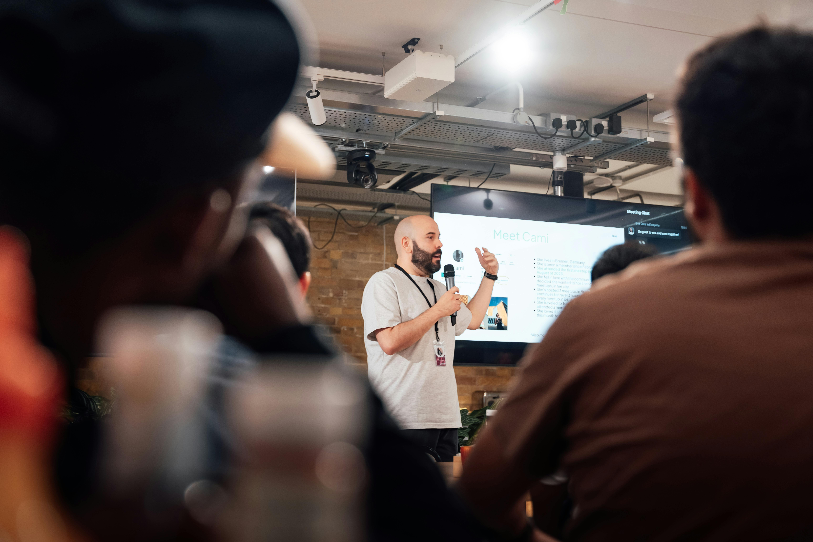

Únete a esta jornada de limpieza comunitaria y ayuda a restaurar la belleza natural de nuestros entornos. Durante la actividad, organizaremos equipos para recoger, clasificar y reciclar diferentes tipos de residuos en playas, parques y zonas urbanas. Más que una simple limpieza, este evento fomenta la conciencia ambiental, el trabajo en equipo y la importancia de reducir, reutilizar y reciclar. ¡Un paso concreto hacia un planeta más limpio!
El evento organizado por DAW1 se celebrará en el salón de actos del centro de formación profesional Virgen de Gracia de Puertollano Ciudad Real, el día 2 de abril de 2025 a las 18:30 ¡Te esperamos!
